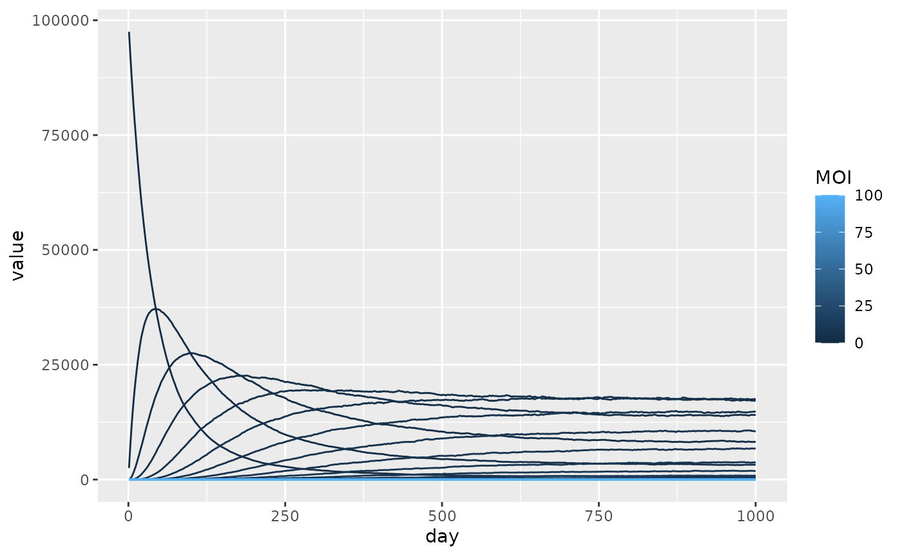
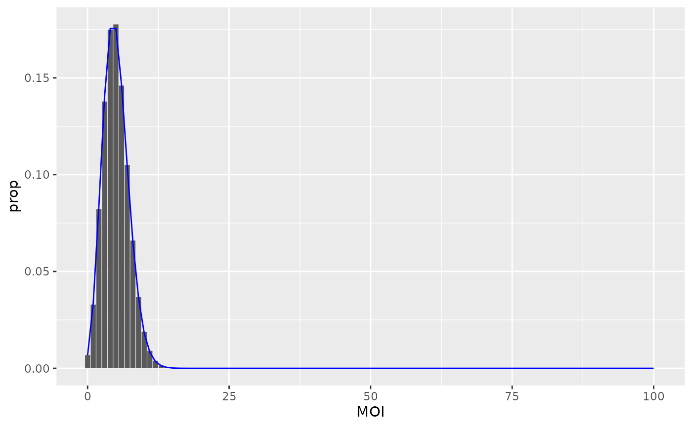

One of the earliest elaborations on Ross’s early SIS style models of malaria infection in human populations was a queueing model which was developed when it became apparent that superinfection, when an individual host is simultaneously infected with multiple distinct parasite broods, was an important concept in malaria epidemiology.
The basic model was presented as an \((M/M/\infty)\) queueing process, with state space \(X_{0}, X_{1}, \dots\), where the subscripts denote the number of parasite broods an individual is infected with (such that \(0\) is an uninfected person). The number of broods infecting a person is known as the multiplicity of infection (MOI).
The force of infection is denoted \(h\) and the recovery rate from compartment \(m\) is \(\rho_{m}\). Then the deterministic dynamics can be expressed as:
\[\begin{equation} \dot{X}_{0} = -h X_{0} + \rho_{1} X_{1} \\ \dot{X}_{m} = -(h + \rho_{m})X_{m} + h X_{m-1} + \rho_{m+1} X_{m+1} \end{equation}\]
The prevalence of disease (also known as the parasite rate in malaria) is \(X = 1 - \frac{X_{0}}{H}\), where \(H\) is the total human population.
In our formulation, we let the recovery rate have the following form:
\[\begin{equation} \rho_{m} = r m^{\sigma} \end{equation}\]
When \(\sigma = 1\), parasite broods clear independently. By setting \(\sigma > 1\) clearance rates become faster and competition is simulated; \(\sigma < 1\) means slower clearance due to facilitation between parasites. When broods clear independently the distribution of MOI in the population is Poisson with mean \(h/r\).
In Micro-MoB the MOI vector is allowed to grow as needed to accommodate arbitrarily large values of MOI, but may become computationally expensive in such cases.
Simulation
Let’s check that we recover approximately the correct distribution over MOI. First we set up and run a simulation for 1000 days. We use make_MicroMoB() to set up the base model object and setup_humans_MOI() with our chosen parameters to set up the multiplicity of infection human model.
h <- 0.025
r <- 1/200
b <- 0.55
EIR <- -log(1 - h) / b
n <- 1
tmax <- 1e3
MOI_init <- matrix(data = c(1e5, rep(0, 1e2)), nrow = 101, ncol = n)
mod <- make_MicroMoB(tmax = tmax, p = 1)
setup_humans_MOI(model = mod, stochastic = TRUE, theta = matrix(1, nrow = n, ncol = 1), H = colSums(MOI_init), MOI = MOI_init, r = r, b = b)
MOI_out <- matrix(data = NaN, nrow = nrow(MOI_init), ncol = tmax + 1)
MOI_out[, 1L] <- MOI_init
while (mod$global$tnow <= mod$global$tmax) {
mod$human$EIR <- EIR
step_humans(model = mod)
MOI_out[, mod$global$tnow + 1L] <- mod$human$MOI
mod$global$tnow <- mod$global$tnow + 1L
}With these parameter values we expect a mean MOI of about 5. We see that the simulation converges to this equilibrium distribution after some time.
weighted.mean(x = 0:100, w = MOI_out[, tmax])
#> [1] 5.02785Now we can plot the compartment sizes.
# plot output
MOI_out_dt <- as.data.table(t(MOI_out))
MOI_out_dt <- suppressWarnings(melt(MOI_out_dt))
setnames(MOI_out_dt, new = c("MOI", "Count"))
levels(MOI_out_dt$MOI) <- 0:100
MOI_out_dt[, "Day" := 0:tmax, by = MOI]
ggplot(data = MOI_out_dt) +
geom_line(aes(x = Day, y = Count, group = MOI, color = as.numeric(MOI)))
Another check for Poisson-ness of the MOI distribution is to plot the compartment sizes at the last time point. The theoretical distribution is plotted as a blue line.
MOI_final <- MOI_out_dt[Day == tmax, ]
MOI_final[, "prop" := Count / sum(Count)]
MOI_final[, "MOI" := 0:100]
MOI_final[, "theoretical" := dpois(x = MOI, lambda = h/r)]
ggplot(MOI_final, aes(MOI, prop)) +
geom_bar(stat = 'identity') +
geom_line(aes(x = MOI, y = theoretical), color = "blue")